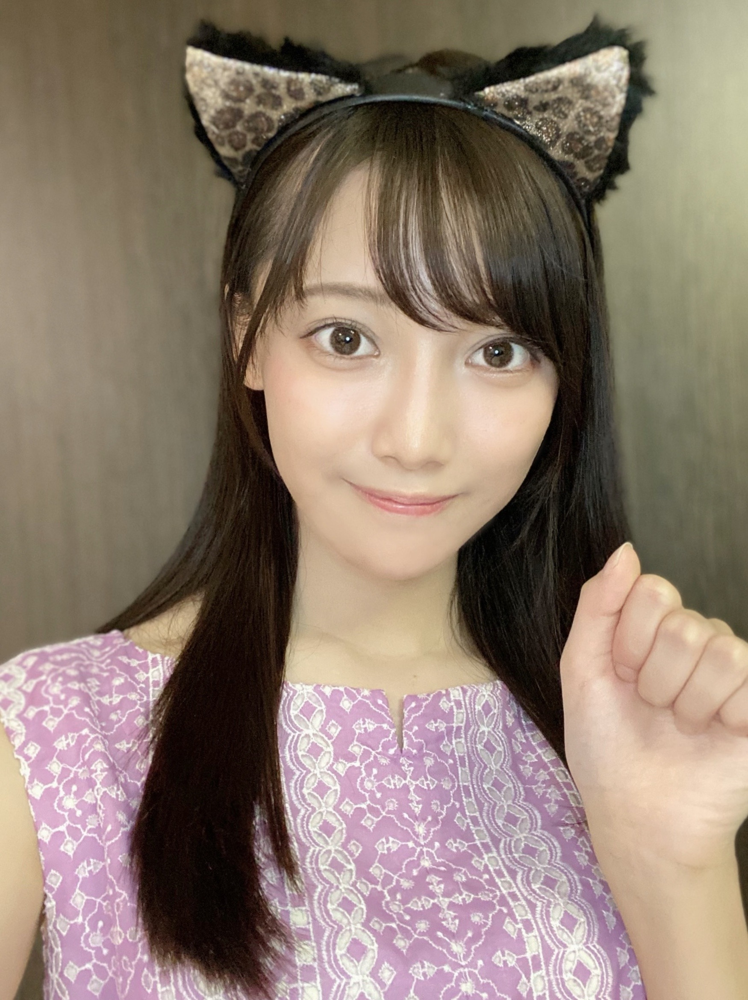
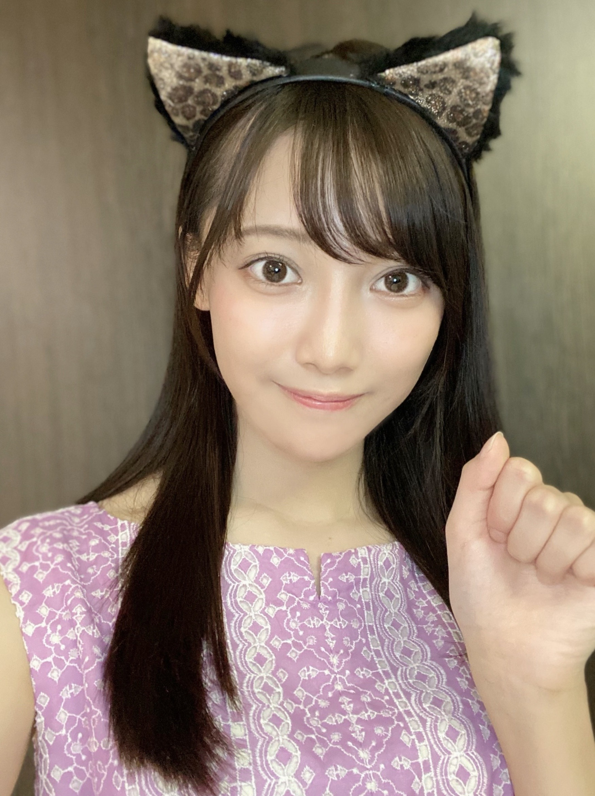

| 2020/09 29 Tue | ありがとう ☺︎ サイリウムカラー決まったよ！黒見明香(16) |
月末だね！今日も、お仕事や勉強、一日お疲れ様でした✩︎⡱
ココを見つけてくださり ありがとうございます♪
乃木坂46 新４期生の黒見明香です。
すこーしだけ自己紹介させてください☺︎
♪:*:･･:*:･･:*:･･:*:･･:*:･･:*:･♪:*:･･:*:･･:*:･･:*:･･:*:･･:*:･♪
黒見 明香（くろみ はるか）
2004年1月19日生まれ 16才
香港生まれ・東京都出身です
あだ名： くろみん・黒見ちゃん
3の倍数9・6・3(くろみ)
と覚えてもらえたら嬉しいです♪
＊
に決定しました！
♬ *。♩*。♬
⚫︎サイリウムヌンチャク発売求む...作りたいですか？
【 のぎおび☺︎ 】
♬ *。♩*。♬
♪:*:･･:*:･･:*:･･:*:･･:*:･･:*:･♪:*:･･:*:･･:*:･･:*:･･:*:･･:*:･♪

-:-:୨୧:-:- ただ今発売中の9月生写真「ジャンプスーツ」オフショットも安定のダブルピース\(//∇//)\いつも同じポーズすぎて恥ずかしい・・・
【 ダブルピース写真シリーズ☺︎ 】

-:-:୨୧:-:- 「のびおび」のカボチャ、実は前日描いたマイパンプキンでしたー！笑
読んでくださり、本当にありがとうございます☺︎
次回も、会えたら嬉しいなぁ✨
またねヾ(･ω･*)
くろみはるか☺︎
☆ 本日のあなたのラッキーナンバー：❹ と ❻
♪:*:･･:*:･･:*:･･:*:･･:*:･･:*:･♪:*:･･:*:･･:*:･･:*:･･:*:･･:*:･♪
・
・
・
＜ちょこっとアンコール♬笑＞
⚫︎珍しい名前ですね。黒木さんといえば宮崎県がルーツの人が多いようですが黒見さんはどこかルーツがあるのでしょうか？
西日本、中国地方の可能性が高そうですーヾ(･ω･*)o
♬ *。♩*。♬
⚫︎寮生活で、海外の方と一緒に住むのでちょっぴり不安なのですが、便利な英語ってありますか？
⚫︎写真みたいに記憶されてるのわかる！人や物に強い興味があるんだと思います。覚えてたことで人を助けることができてから、これに悩むことはなくなりました。
♬ *。♩*。♬
♬ *。♩*。♬
10月2日は林瑠奈ちゃん♡
10月3日は遠藤さくらちゃん♡
お誕生日ですね♪
そして、お誕生日を迎えるあなたへ・・
✨HAPPY BIRTHDAY✨
どうぞ素敵な一年になりますよう✩︎⡱
♪:*:･･:*:･･:*:･･:*:･･:*:･･:*:･♪:*:･･:*:･･:*:･･:*:･･:*:･･:*:･♪
ここまで読んでくださったアナタ、ほんとうにありがとう♡
またねヾ(･ω･*)
ココを見つけてくださり ありがとうございます♪
乃木坂46 新４期生の黒見明香です。
すこーしだけ自己紹介させてください☺︎
♪:*:･･:*:･･:*:･･:*:･･:*:･･:*:･♪:*:･･:*:･･:*:･･:*:･･:*:･･:*:･♪
黒見 明香（くろみ はるか）
2004年1月19日生まれ 16才
香港生まれ・東京都出身です
あだ名： くろみん・黒見ちゃん
3の倍数9・6・3(くろみ)
と覚えてもらえたら嬉しいです♪
＊
↓頂いたコメントからー
◎ポンコツエピソード大好きです笑 引き続きよろしく！
中学生の体育の時間に
「かべ逆立ち」を習っていたら、
上下左右 頭がすっかり混乱して・・・
壁のない方に向かって逆立ちしてみたり、
壁を背中にしゃがんで
後ろ足でカブト虫みたいに、
壁をよじ登っていったりと・・・
周りの子がドン引きしてたよ・・・Σ（ﾟдﾟll）汗
＊
ノギザカスキッツで聖来ちゃんがお話ししてた
「回るとどっちが右か分からない・・・」に
心から共感しています(*´-`)wow wow
♪:*:･･:*:･･:*:･･:*:･･:*:･･:*:･♪:*:･･:*:･･:*:･･:*:･･:*:･･:*:･♪

-:-:୨୧:-:- あなた（乃木坂の紫）✖️わたし（いつも真っ直ぐな初心で、癒せる存在に☺︎）手伝ってくれて本当にありがとう〜✩︎⡱
-:-:୨୧:-:- あなた（乃木坂の紫）✖️わたし（いつも真っ直ぐな初心で、癒せる存在に☺︎）手伝ってくれて本当にありがとう〜✩︎⡱
【 サイリウムカラー✨ 】
サイリウムカラー、相談のってくれて本当にありがとうー!!
皆んなのアドバイス、一つ一つ大切に読ませて貰ったよー((〃ω〃))
いっぱい、いっぱい考えて・・・
✨紫 ＆ 緑✨
----*----*----*----*
紫：あなたのこと・乃木坂を支えてくださる大切な皆さんのことだよ♡
緑：わたしの目標・初心・謙虚さを胸に、あなたの癒しの存在になりたい☺︎
----*----*----*----*
に決定しました！
＊
組み合わせ表を送ってくれたり、
皆んなのお勧めカラーを集計！して教えてくれたり、、、と
何度も見返して、参考にさせて貰ったよー♬
新4期の5人にも相談して
（みんなじっくーり悩み中だよ、ゆっくり待っててあげて下さいね☺︎）
・
・
・
◎一つはあなたの色
大切な乃木坂を支えて、一緒に坂を登る大好きな皆んなの色
やっぱり『紫』だなぁ〜て思いました♡
◎一つはわたしの目標
担任の先生が"今どき珍しい真っ直ぐでピュアな子です"と
書いてくださった事があります。
今の胸いっぱいの"初心"、
思い出深い"神宮の緑"
『努力・感謝・笑顔』
わたしの緑で、いつかあなたの茎や枝、葉っぱになれたら...
癒しやリラックスできる存在になれたら嬉しいな✨
という想いを込めました！
＊
✩︎誕生色...(リーフグリーン)
優しさ・自尊心・精神性 、
何ごとも一生懸命な努力家
もすごく心に響いたよー(*´-`)
＊
皆んなの紫と
わたしの緑が 寄り添った時に、
色がすごく綺麗だなぁ。。。て思ったことも
決定打になりました (*ˊᵕˋ*)੭✨
「推してる」人にとって、色ってとても大事だよ！
ってアドバイスくださった皆んなもありがとうー！
これから「紫✖️緑」で一緒にたくさん想い出を作りたいな♪
どうぞよろしくお願いします☺︎
♬ *。♩*。♬
ハッピーベイビーのあだ名や、向日葵の明るい色、
香港やブルース・リーさん、カンフーのカッコいいイメージ、
名前の「黒見(クロミ)」から２色で黒になる組み合わせ、黒黒、黒緑、
クロミちゃん(キャラクター)の黒桃、
混ぜると紫になる２色、カラーコードの色、963数字の星の色、
誕生花、誕生日カラー、ワンピースのイメージ、
尊敬する先輩の色、憧れの先輩の色、背番号を受け継いでほしい、
単色がいい！一色で染まる会場は本当に感動的、
直感で、自分の好きを貫いていいんだよ、、、などなど
いっぱいコメント送って下さり本当にありがとう✩︎⡱
アドバイス本当に、力になりましたヾ(･ω･*)o✨
いつかか・・・ヌンチャク個人ライト！？笑
カッコいいオリジナルライトも作ってみたいなぁ・・・夢です(*´-`)笑
♪:*:･･:*:･･:*:･･:*:･･:*:･･:*:･♪:*:･･:*:･･:*:･･:*:･･:*:･･:*:･♪
-:-:୨୧:-:- のぎおびスクショタイム "ミニハロウィン"ありがとうございました☺︎♡
-:-:୨୧:-:- のぎおびスクショタイム "ミニハロウィン"ありがとうございました☺︎♡
【 のぎおび☺︎ 】
嬉しすぎることに、
昨日「のぎおび」配信させていただきました！
8月4日の新4期生ウィーク以来の、２回目！
忙しい週始めから見てくださって、本当にありがとうー☺︎
＊
なんだか、まだまだ緊張しちゃって・・・・
硬くなっちゃったりしてごめんなさい><
次回は最後まで、
柔らかく気楽な感じで見てもらえるように
リラックス配信目指すね (*ˊᵕˋ*)੭✨
＊
コメントも沢山送ってくれて、ホントにありがとうー!!
読ませて貰って、すっごくパワーが出て、嬉しかったよー♪
皆んなのおかげで、とても楽しい時間だったよ〜✩︎⡱
『見逃しちゃったよー><』て方も、
よかったら、ぜひスマートニュースさんの
"アフタートーク" 見てみてくださいねヾ(･ω･*)o
あのお話・・・してるよ〜☺︎笑
♬ *。♩*。♬
⚫︎明日は真夏さんだね！リスペクトしてる先輩に宿題出せてよかったね✨
びっくりして、とても嬉しかったです✩︎⡱
⚫︎明日は真夏さんだね！リスペクトしてる先輩に宿題出せてよかったね✨
びっくりして、とても嬉しかったです✩︎⡱
大好きな真夏さんに「猫耳置いて行ったらー？」
というコメントいただいて、たしかに〜!!と思ったのですが、
真夏さん♡は 数々の伝説を造られた✨
✨アイドルレベルMAX✨のずっきゅん王国の国王様なので、
猫耳は当たり前に、飛び超えて来られる気もします☺︎♡
今日の配信もドッキドキ、楽しみですね〜♪
♬ *。♩*。♬
♪:*:･･:*:･･:*:･･:*:･･:*:･･:*:･♪:*:･･:*:･･:*:･･:*:･･:*:･･:*:･♪
-:-:୨୧:-:- ただ今発売中の9月生写真「ジャンプスーツ」オフショットも安定のダブルピース\(//∇//)\いつも同じポーズすぎて恥ずかしい・・・
【 ダブルピース写真シリーズ☺︎ 】
⚫︎ 生写真のオフショットシリーズ、本当に大好き。もっと見たいな。
探しても、さがしても・・・
写真フォルダから出てくるのが
毎回『ダブルピース』の写真ばかりで、
自分でもドン引きです・・・( ´_ゝ`)のぉぉ
＊
特に、気が抜けている待機中に
マネージャーさんが撮ってくださると、
だいたいワンパターンの模様です・・・汗
＊
⚫︎生写真でもお得意のダブルピースのショットがあっても面白そう！
採用していただけるかなぁ・・・( ꒪⌓︎꒪)
いつか、ダブルピースコレクション、出来る日が！？笑
先輩方の可愛い、美しいポーズからいっぱい学んで、
もっとバラエティ増やせるよう頑張るねー♪
（生写真集めてるよー！てコメントや感想もありがとう〜☺︎）
恒例！？ダブルピースシリーズ笑 はこちらだよ〜↓
♪:*:･･:*:･･:*:･･:*:･･:*:･･:*:･♪:*:･･:*:･･:*:･･:*:･･:*:･･:*:･♪
-:-:୨୧:-:- 「のびおび」のカボチャ、実は前日描いたマイパンプキンでしたー！笑
（相変わらず、絵が下手で、なんだか不気味・・・汗）
【 TOKYO IDOL FESTIVAL オンライン2020 】
♪:*:･･:*:･･:*:･･:*:･･:*:･･:*:･♪:*:･･:*:･･:*:･･:*:･･:*:･･:*:･♪
ブログやお手紙で、たくさんのコメントや感想送って下さり
本当にありがとうございます✩︎⡱
今回初めてコメントしてみたよー！というあなたも、
何回目のコメントなんだーと送ってくれるあなたも、
大切な時間を使ってお話しして下さり
本当にありがとうございます✨
あなたに出逢えた奇跡に、感謝しながら、
大事に、一つずつ全部読ませて頂いています((〃ω〃))
皆さんのことを知ることが出来る、
私の１日の中で『１番幸せな時間』です♩
直接お話しできる時が、 待ち遠しいです✩︎⡱
＊
すっかり寒くなってきちゃって、
【 TOKYO IDOL FESTIVAL オンライン2020 】
⚫︎TIFサイリウムカラーは見えないかもしれないけど、HEARTは届くかな〜？
うん！心の目で見ます (*ˊᵕˋ*)੭✨ぜひぜひ楽しんで下さいねー!!
⚫︎そういえばくろみんは円陣はまだやってないよねー？？乃木中でも少し話題になってたから少し気になっちゃった！
実は、2月の名古屋ドームでのバースデーライブの時に、
新4期生も、円陣に入れて頂いたの...！
先輩方のオーラが美しすぎて、緊張して足ガクガクしながら
奈於ちゃんが5人を代表して挨拶してくれました。
本当にあたたかく見守って下さり、拍手してくださり、
忘れられない瞬間です✩︎⡱
初心を胸に刻んでこれからの円陣も一つ一つ、大切にするね✨
♬ *。♩*。♬
✩︎⡱ 本日 梅澤美波さん♡の写真集「夢の近く」発売日ですねー！
意志が強くて、繊細で優しくて、カッコよすぎる美波さん✨
先日、たまたま隣にいらした美波さんが、
すっごく気さくに、振り返って質問してくださって、
嬉しくて一人で心の中で、感激していました((〃ω〃))
わたしもしっかり予約していますー！（特典はポスカにしました☺︎）
みんなも発送待ちかなー？本屋さんかな？楽しみですね♡
♬ *。♩*。♬
✩︎⡱ 10月2日  林瑠奈ちゃんお誕生日
オーディションの時から2年以上、8、9番とずっと隣にいてくれて、優しくて、とても心強い存在です。周りをすごくよく見ていてくれて、愛と勇気をもってアドバイスしてくれたりツッ込んでくれてるるなぴ。いつも笑ってくれると幸せな気持ちになります♪困ったときに一緒に相談して解決してくれるところも頼りにしているよー！お誕生日おめでとうー (*ˊᵕˋ*)੭✨
✩︎⡱ 10月3日 遠藤さくらちゃんお誕生日
お話しする時いつも優しい笑顔でうんうんと聞いてくれて、時々「えーそんな事ないよー」と照れちゃうところも、本当に可愛くて大好きです。一人でもいっぱい倍努力を重ねてる後ろ姿、キラキラしている瞳も憧れのさくらちゃん。お誕生日おめでとうー (*ˊᵕˋ*)੭✨
ブログやお手紙で、たくさんのコメントや感想送って下さり
本当にありがとうございます✩︎⡱
今回初めてコメントしてみたよー！というあなたも、
何回目のコメントなんだーと送ってくれるあなたも、
大切な時間を使ってお話しして下さり
本当にありがとうございます✨
あなたに出逢えた奇跡に、感謝しながら、
大事に、一つずつ全部読ませて頂いています((〃ω〃))
皆さんのことを知ることが出来る、
私の１日の中で『１番幸せな時間』です♩
直接お話しできる時が、 待ち遠しいです✩︎⡱
＊
すっかり寒くなってきちゃって、
なんだか風邪気味だよー、疲れちゃったよーって方も
本当に、今日も一日 お疲れ様でした✩︎⡱
きっと心も、身体も、しんどい時もあるかと思います。。
どうぞ、皆さんが 少しでも
ひとときリラックスできますように...✩︎⡱
と願っています(*´-`)
初めて会える日を、楽しみに待っています♪
＊
明日は、璃果ちゃんですよー♬
本当に、今日も一日 お疲れ様でした✩︎⡱
きっと心も、身体も、しんどい時もあるかと思います。。
どうぞ、皆さんが 少しでも
ひとときリラックスできますように...✩︎⡱
と願っています(*´-`)
初めて会える日を、楽しみに待っています♪
＊
明日は、璃果ちゃんですよー♬
" 璃果ちゃん、バナナミルク美味しいんだって！"
（伝言ゲームじゃないよby奈於ちゃん☺︎）
読んでくださり、本当にありがとうございます☺︎
次回も、会えたら嬉しいなぁ✨
またねヾ(･ω･*)
くろみはるか☺︎
☆ 本日のあなたのラッキーナンバー：❹ と ❻
♪:*:･･:*:･･:*:･･:*:･･:*:･･:*:･♪:*:･･:*:･･:*:･･:*:･･:*:･･:*:･♪
・
・
・
＜ちょこっとアンコール♬笑＞
♬ *。♩*。♬
⚫︎珍しい名前ですね。黒木さんといえば宮崎県がルーツの人が多いようですが黒見さんはどこかルーツがあるのでしょうか？
西日本、中国地方の可能性が高そうですーヾ(･ω･*)o
コメントで教えていただいたよ〜↓
よく電話でも「くるみさん？くろいさん？」と聞かれたり、
新学期の出席簿で「里見あすかさん」と呼ばれることが多く、
「だいたいそんな感じです」と答えたらとっても怒られました・・・\(//∇//)\汗
♬ *。♩*。♬
⚫︎トマトマリネもミートソースもどちらも食べたくなっちゃいましたー
♬ *。♩*。♬
⚫︎トマトマリネもミートソースもどちらも食べたくなっちゃいましたー
クロミンイーツで届けてくれないかな？
⚪︎クロミンイーツ！良いですねヾ(･ω･*)o
いつか真夏さん♡みたいに、作って食べてもらいたいなー✨
⚫︎お弁当に入ってたら嬉しいオカズは何？
⚪︎卵焼き、からあげ、肉じゃが嬉しいです☺︎
⚪︎卵焼き、からあげ、肉じゃが嬉しいです☺︎
なんでも美味しく食べちゃうタイプです笑
皆んなの好きなおかずは何かなぁ・・・？
♬ *。♩*。♬
⚫︎寮生活で、海外の方と一緒に住むのでちょっぴり不安なのですが、便利な英語ってありますか？
⚪︎なんだろうー 聞き取れない時、分からない時に"何度も聞いちゃうと悪いかなぁ..."て思っちゃうこともあるかもしれないけれど、
気にせず、勇気をもってSorry? Pardon me? Would you say that again, please? a little slower, please? て、『あなた(の言ってる事)を、分かりたいよ！』て気持ちを伝えられたら、誤解が少なくなることも、あるかなぁ、て思うよ☺︎
緊張するよね・・・応援してるよー！ファイトー！
♬ *。♩*。♬
⚫︎写真みたいに記憶されてるのわかる！人や物に強い興味があるんだと思います。覚えてたことで人を助けることができてから、これに悩むことはなくなりました。
⚪︎同じ方いらっしゃった (*ˊᵕˋ*)੭ 人を助けることが出来たのすごいね✨わたしもこの特技を生かせるように頑張りたいな〜
＊
⚫︎職業柄、電話で予約頂くときに声で「あ！あの人だ！」って分かるよ！
＊
⚫︎職業柄、電話で予約頂くときに声で「あ！あの人だ！」って分かるよ！
⚪︎声を記憶できる方もいるんだねー！曲を聴いたらすぐ"⚪︎⚪︎の歌声だー"て分かるのかなー？ステキだねー♪
＊
⚫︎黒見ちゃんは写真のように場面を記憶できるって言ってたけど、テストとかそしたらノート見れば満点なのでは...！！！笑
まるで、ドラ◯もんの「暗記パン」欲しいですよねー！笑
でも、なぜか顔だけなの〜汗
なんでだろー教科書やノートは全然・・・・
⚫︎黒見ちゃんは写真のように場面を記憶できるって言ってたけど、テストとかそしたらノート見れば満点なのでは...！！！笑
まるで、ドラ◯もんの「暗記パン」欲しいですよねー！笑
でも、なぜか顔だけなの〜汗
なんでだろー教科書やノートは全然・・・・
興味が！？・・・勉強も頑張らないと・・( ´_ゝ`)
♬ *。♩*。♬
⚪︎悩んでいたことの後日談も、伝えてくれてありがとう。
⚪︎悩んでいたことの後日談も、伝えてくれてありがとう。
辛い時、悲しい時、ここに書いてくれて、それで少しだけでも心が整理できたり、ぼーってできたらって思うよ〜 ゆっくり自分のペースで！だよー
⚪︎闘病中のあなたも、今頑張ってることが、未来の光になりますように・・・！信じて願っています。一緒に頑張ろうね (. ≧ω≦)ﾉ
⚪︎闘病中のあなたも、今頑張ってることが、未来の光になりますように・・・！信じて願っています。一緒に頑張ろうね (. ≧ω≦)ﾉ
♬ *。♩*。♬
＜恒例の！？ゲームコーナーだよ〜笑✨＞
⚫︎ くろみんはゲームは全般的に好きなのかな？
⚪︎うん！恥ずかしながら、ゲーム好きだよ〜(〃ω〃)
参考になるかわからないけど、私が今ログインしているゲームは、プロスピA、ウイイレ、天地の如く、あつまれどうぶつの森、乃木フェス、乃木恋、いつ乃木とかだよ〜(多いよね汗）
⚫︎プロスピ最後のリアル軌道で失速しました。
⚪︎リアル軌道難しいよね、、、私も慣れるまで全然打てなかったよぉ〜
⚫︎ プロスピのアニバ前の100エナジーはかなり美味しいです！
アニバーサリー前のエナジーは大事だよね☺︎笑
私は今2963 だよー(にくろみだね！)
⚫︎ プロスピのワールドスターガチャは引くの？
引きたいけど、アニバーサリーまでは我慢するよ〜ヾ(･ω･*)o
⚫︎FIFAモバイルっていうサッカーゲーム始まるけどやる予定ありますか？
FIFAモバイルなんだか楽しそうだから、やってみようかなぁって思ってるよ〜☺︎
⚫︎ 乃木恋彼氏イベント頑張るね！応援して〜
私も恥ずかしいけど彼氏イベント頑張るよー\(//∇//)\
一緒に頑張ろうねー✩︎⡱
乃木の「の」やノギザカスキッツ、モバメや映像研やお芝居のお話し、揚げパンやABCスープの話、オーディションの話、トマト料理やサツマイモのレシピ、家族の誕生日だよー！テスト満点だったよー！可愛い乃木坂クイズも、回文小噺も、未来が過去を変えてくれるんだよというお話もありがとうございますヾ(･ω･*)o
一つ一つ笑ったり感動したりしながら読ませていただきました✩︎⡱
こうして皆んなのことが知れるのが嬉しいナ〜♪
♬ *。♩*。♬
10月2日は林瑠奈ちゃん♡
10月3日は遠藤さくらちゃん♡
お誕生日ですね♪
そして、お誕生日を迎えるあなたへ・・
✨HAPPY BIRTHDAY✨
どうぞ素敵な一年になりますよう✩︎⡱
♪:*:･･:*:･･:*:･･:*:･･:*:･･:*:･♪:*:･･:*:･･:*:･･:*:･･:*:･･:*:･♪
ここまで読んでくださったアナタ、ほんとうにありがとう♡
またねヾ(･ω･*)
コメント(283)
2020/09/29 18:06
コメント(283)
素敵なブログありがとう☺️
ブログ更新ありがとう。サイリュームカラー決まったんだ。またバッチリコメ残すね。ナオッチ
くろみんお疲れ様
チェキが当たったきよたです
サイリウムカラー決まって1つ落ち着いたかな？
やっぱりくろみんは不使用色からだったねー
不使用の表送っといて良かった
紫×緑いいと思うよ！
のぎおび緊張してたんだね
でも前回より落ち着いてたと思ったよ。楽しかった
「の」やっと聴けました
蓮加がうまくリードしてくれて良かったね
親友の話とても良かったです
今回もありがとうね
チェキが当たったきよたです
サイリウムカラー決まって1つ落ち着いたかな？
やっぱりくろみんは不使用色からだったねー
不使用の表送っといて良かった
紫×緑いいと思うよ！
のぎおび緊張してたんだね
でも前回より落ち着いてたと思ったよ。楽しかった
「の」やっと聴けました
蓮加がうまくリードしてくれて良かったね
親友の話とても良かったです
今回もありがとうね
プロスピのエナジーが2963！？す、凄いよー良くこんなに集めたね！！ついこの間800超えたよ～1000は超えたいよ。エナジー数黒見ちゃんのラッキーナンバーだね☺️
くろみん＼(^o^)／お疲れさまでした
おー、今週の新4期生リレーブログ、きっと全員カラー発表するよね＼(^o^)／
周りの来がドン引きって（笑）
今逆立ちできるの？見たい(*´ω｀*)
くろみんも左右分からないか？（笑）
紫ｘ緑か？でも意味はめちゃくちゃいいじゃん(｡>﹏<｡)♡
くろみんは今後でもまっすぐなプアな子のままで(/･ω･)/
いずれヌンチャクライトが出来たら、ヌンチャクライト＝くろみんファンになるよね＼(^o^)／
のぎおびの金ｘ黒猫耳は最高に似合ったよ(｡>﹏<｡)♡
配信の時も思ったけど、本当にまなったん路線な子だな(ﾟдﾟ)！
でも可愛いから嬉しいよ＼(^o^)／♪
よっし、靴まで映ってる全身写真＼(^o^)／♡
あっ、いつものダブルピースじゃん！（笑）
本当にいつも足元まで写る全身写真ありがとう(｡>﹏<｡)
本当にくろみんだけだよ(;_;)
いつかダブルピースの雑誌連載できたら良いなあ（笑）
あっ、かぼちゃは自分で書いたか？(ﾟдﾟ)！全然分からなかったよ(*´ω｀*)
いよいよTIFだよね＼(^o^)／頑張って
I see...はもう完璧だったけど(*´ω｀*)♪
ちゃんとみなみんの写真集を予約したってさすがだな（笑）
今後ももっと距離縮めたら良いなあ(｡>﹏<｡)
ああ、そっか2日と3日はるなぴとさくちゃんの誕生日か？
4期生は今後も皆らぶらぶ仲良くのままで(/･ω･)/
風邪引かないように気をつけて
・まーなーEatsとくろみんEats、お二人合体すれば？（笑）
・あっ、英語といえば新4期生はまだのぎえいごに来てないよね。早く来てほしいなあ。遊びに行きたいの？
・顔だけ覚えれるならば、昨日のノギザカスキッツのあの人物の顔はきっと覚えてるよね（笑）芥川龍之介じゃなくて・・・（笑）
そっか、自分も10月12日誕生日だよ(ﾟдﾟ)！
やっぱり大人になると自分の誕生日や年齢すら忘れちゃうなあ
自分はまなったんと同じ1993年生まれなので・・・１７ちゃいになるよ＼(^o^)／♡（笑）
これからも頑張って(/･ω･)/
おー、今週の新4期生リレーブログ、きっと全員カラー発表するよね＼(^o^)／
周りの来がドン引きって（笑）
今逆立ちできるの？見たい(*´ω｀*)
くろみんも左右分からないか？（笑）
紫ｘ緑か？でも意味はめちゃくちゃいいじゃん(｡>﹏<｡)♡
くろみんは今後でもまっすぐなプアな子のままで(/･ω･)/
いずれヌンチャクライトが出来たら、ヌンチャクライト＝くろみんファンになるよね＼(^o^)／
のぎおびの金ｘ黒猫耳は最高に似合ったよ(｡>﹏<｡)♡
配信の時も思ったけど、本当にまなったん路線な子だな(ﾟдﾟ)！
でも可愛いから嬉しいよ＼(^o^)／♪
よっし、靴まで映ってる全身写真＼(^o^)／♡
あっ、いつものダブルピースじゃん！（笑）
本当にいつも足元まで写る全身写真ありがとう(｡>﹏<｡)
本当にくろみんだけだよ(;_;)
いつかダブルピースの雑誌連載できたら良いなあ（笑）
あっ、かぼちゃは自分で書いたか？(ﾟдﾟ)！全然分からなかったよ(*´ω｀*)
いよいよTIFだよね＼(^o^)／頑張って
I see...はもう完璧だったけど(*´ω｀*)♪
ちゃんとみなみんの写真集を予約したってさすがだな（笑）
今後ももっと距離縮めたら良いなあ(｡>﹏<｡)
ああ、そっか2日と3日はるなぴとさくちゃんの誕生日か？
4期生は今後も皆らぶらぶ仲良くのままで(/･ω･)/
風邪引かないように気をつけて
・まーなーEatsとくろみんEats、お二人合体すれば？（笑）
・あっ、英語といえば新4期生はまだのぎえいごに来てないよね。早く来てほしいなあ。遊びに行きたいの？
・顔だけ覚えれるならば、昨日のノギザカスキッツのあの人物の顔はきっと覚えてるよね（笑）芥川龍之介じゃなくて・・・（笑）
そっか、自分も10月12日誕生日だよ(ﾟдﾟ)！
やっぱり大人になると自分の誕生日や年齢すら忘れちゃうなあ
自分はまなったんと同じ1993年生まれなので・・・１７ちゃいになるよ＼(^o^)／♡（笑）
これからも頑張って(/･ω･)/
くろみん、ブログ更新ありがとうございます。
サイリウムカラー決定、おめでとう！
紫×緑！ 素敵な組み合わせ！
まりっかカラーですね！
初期の頃のアンダーライブ、伊藤万理華さんセンター曲での紫×緑のサイリウムがすごく美しかったのが今も印象的です。
観る人を惹き付ける圧倒的なパフォーマンスが魅力的だった偉大な先輩のカラーを、受け継いでくださってすごく嬉しいです。
これからは「くろみんカラー」ですね。
応援しています！
サイリウムカラー決定、おめでとう！
紫×緑！ 素敵な組み合わせ！
まりっかカラーですね！
初期の頃のアンダーライブ、伊藤万理華さんセンター曲での紫×緑のサイリウムがすごく美しかったのが今も印象的です。
観る人を惹き付ける圧倒的なパフォーマンスが魅力的だった偉大な先輩のカラーを、受け継いでくださってすごく嬉しいです。
これからは「くろみんカラー」ですね。
応援しています！
サイリウムカラーめちゃめちゃ好きです！！
僕がいつか初めて行くときは紫と緑のライトを掲げます！！
かれこれ４ヶ月くらいブログ読んでますが読めば読むほどくろみんを推したくなるし会いたくなってます！！くろみんは歌も上手で綺麗で乃木坂を愛してるから僕は乃木坂を代表するメンバーになると勝手に信じています！！
くろみんのペースで活動してくれたら僕はとても嬉しいです。がんばってね！！
僕がいつか初めて行くときは紫と緑のライトを掲げます！！
かれこれ４ヶ月くらいブログ読んでますが読めば読むほどくろみんを推したくなるし会いたくなってます！！くろみんは歌も上手で綺麗で乃木坂を愛してるから僕は乃木坂を代表するメンバーになると勝手に信じています！！
くろみんのペースで活動してくれたら僕はとても嬉しいです。がんばってね！！
可愛い！
くろみん
こんばんは。
今日も１日お疲れ様!
ブログ更新ありがとう～
サイリウムカラー決定おめでとう(*’ω’ﾉﾉﾞ
記念すべき日ですね。
紫と緑、素敵な組み合わせ。
TIF、このカラーで応援していますので、頑張ってね!
彼氏イベント、頑張っております。
どうなるか、ドキドキです(笑)
またねﾉｼ
#162
こんばんは。
今日も１日お疲れ様!
ブログ更新ありがとう～
サイリウムカラー決定おめでとう(*’ω’ﾉﾉﾞ
記念すべき日ですね。
紫と緑、素敵な組み合わせ。
TIF、このカラーで応援していますので、頑張ってね!
彼氏イベント、頑張っております。
どうなるか、ドキドキです(笑)
またねﾉｼ
#162
ブログ更新ありがとう！
昨日ののぎおびもしっかりみたよー
今週の選手権は優勝できると思う！
なかなかあれ以上はでない気がするなー
プロスピで今きてる外国人OBなんだけど
どうしてもオーダーを強化したくて、今回
アニバの為にためてたエナジーを使って
ランキング走ってとることにしたよ
でもアニバもどっちかは60連引けたらって
思ってる！
最近少し涼しくなってけど体調には気をつけてね！
昨日ののぎおびもしっかりみたよー
今週の選手権は優勝できると思う！
なかなかあれ以上はでない気がするなー
プロスピで今きてる外国人OBなんだけど
どうしてもオーダーを強化したくて、今回
アニバの為にためてたエナジーを使って
ランキング走ってとることにしたよ
でもアニバもどっちかは60連引けたらって
思ってる！
最近少し涼しくなってけど体調には気をつけてね！
二回目だから仕方ないと思いますが、緊張し過ぎてても疲れちゃいますよね。
慣れてきて楽しくできるようになるのは良いことですが、初々しさもそれはそれで良いんです。
(^^)
慣れてきて楽しくできるようになるのは良いことですが、初々しさもそれはそれで良いんです。
(^^)
くろみん、ブログ更新ありがとう！サイリウムカラー 決定 おめでとう。紫色は、なんといっても 乃木坂 そのものです。いつも、ライブの締めくくりは、乃木坂の歌 会場全体が、紫色にそまるよね。みどり わたしも 好きな色です。信号に例えるなら、進め！どんどん、 前に進んでほしいなあ。
更新ありがとう( ^o^)ノ


のぎおび見たよ～
猫耳でのにゃんにゃんはやられた
よく見るとヒョウ耳だ…
ついにサイリウムカラー決まったね ダブルピース。
ダブルピース。
紫×緑、くろみんが考えぬいた乃木坂愛と希望の色、ばっちり振らせてもらうよ
かりんちゃんが緑×紫だったっけ？
優しくて個性的なくろみんにも似合いそうだね。
昨日、電子レンジがいきなり壊れたからダッシュで買いにいったよ。
新しい電子レンジはとってもよく温もる！
説明書読んでビックリ、マイクロ波を上から照射するんじゃなくて、下の座面から照射するらしい！
床暖！？
家電の進化凄い。
もしかして、普通の事だったかな…？
壁無し壁逆立ちは驚愕だね
体育の授業参観したいよ。
くろみんの名字のルーツが中国地方なんだね。
中国地方在住者として嬉しい
のぎおび見たよ～
猫耳でのにゃんにゃんはやられた
よく見るとヒョウ耳だ…
ついにサイリウムカラー決まったね
紫×緑、くろみんが考えぬいた乃木坂愛と希望の色、ばっちり振らせてもらうよ
かりんちゃんが緑×紫だったっけ？
優しくて個性的なくろみんにも似合いそうだね。
昨日、電子レンジがいきなり壊れたからダッシュで買いにいったよ。
新しい電子レンジはとってもよく温もる！
説明書読んでビックリ、マイクロ波を上から照射するんじゃなくて、下の座面から照射するらしい！
床暖！？
家電の進化凄い。
もしかして、普通の事だったかな…？
壁無し壁逆立ちは驚愕だね
体育の授業参観したいよ。
くろみんの名字のルーツが中国地方なんだね。
中国地方在住者として嬉しい
黒見ちゃん〜
ブログ更新ありがとう〜！
楽しみにしてたよ〜
サイリウムカラーの決定おめでとう。
紫×緑
似合っててとっても良いと思います！
これから思い出をいっぱい積み重ねられると良いですね〜
楽しみにしてます！
坂道合同オーディションから選ばれて
「乃木坂」のカラーになったのがすごく嬉しいです。
僕も黒見ちゃんを誇りに思うよ。
I'm proud of you, your colors and your feelings!
生写真撮影のオフショット、本当に好きです！
今後、ダブルピースの写真を見つけたら笑ってしまいそう〜
そんなちょっとしたことも思い出になるでしょうか。
今後も続けてくれたら嬉しいな。
そうそう、最近、いろんな人に黒見ちゃんのブログ良いよ！
っておススメしまくった(乃木坂友達に)ら、
黒見ちゃんのブログが更新されると、
「黒見ちゃんのブログ読んだけど、本当にすごいね！」
って感想の連絡が来るようになったよ。
黒見ちゃんの努力は、確実にみんなに伝わってるな〜って
思いました。とっても素敵なことだね。
ノギザカスキッツ！面白かったです。
黒見ちゃんがキュンキュンに挑戦！ってなったときの
新4期生ちゃん達の反応がすごく面白かったよ。
みんな黒見ちゃんのことわかってますね、とっても素敵でした。
今日は、oasisのlive foreverを聴きながらコメントを書いています。
黒見ちゃんの歌声も早く聴きたいな…
TIF楽しみですね。
初ステージ？での目標はありますか？
あれば聞いてみたいです。
そこを注目してみますね笑
なんだか、急に寒くなってきて、
いきなり秋！冬！って感じですが、
体調に気をつけてお過ごしくださいね。
今日も素敵な巻物ブログをありがとう！
また5日後を楽しみにしてるね〜
かがやき
ブログ更新ありがとう〜！
楽しみにしてたよ〜
サイリウムカラーの決定おめでとう。
紫×緑
似合っててとっても良いと思います！
これから思い出をいっぱい積み重ねられると良いですね〜
楽しみにしてます！
坂道合同オーディションから選ばれて
「乃木坂」のカラーになったのがすごく嬉しいです。
僕も黒見ちゃんを誇りに思うよ。
I'm proud of you, your colors and your feelings!
生写真撮影のオフショット、本当に好きです！
今後、ダブルピースの写真を見つけたら笑ってしまいそう〜
そんなちょっとしたことも思い出になるでしょうか。
今後も続けてくれたら嬉しいな。
そうそう、最近、いろんな人に黒見ちゃんのブログ良いよ！
っておススメしまくった(乃木坂友達に)ら、
黒見ちゃんのブログが更新されると、
「黒見ちゃんのブログ読んだけど、本当にすごいね！」
って感想の連絡が来るようになったよ。
黒見ちゃんの努力は、確実にみんなに伝わってるな〜って
思いました。とっても素敵なことだね。
ノギザカスキッツ！面白かったです。
黒見ちゃんがキュンキュンに挑戦！ってなったときの
新4期生ちゃん達の反応がすごく面白かったよ。
みんな黒見ちゃんのことわかってますね、とっても素敵でした。
今日は、oasisのlive foreverを聴きながらコメントを書いています。
黒見ちゃんの歌声も早く聴きたいな…
TIF楽しみですね。
初ステージ？での目標はありますか？
あれば聞いてみたいです。
そこを注目してみますね笑
なんだか、急に寒くなってきて、
いきなり秋！冬！って感じですが、
体調に気をつけてお過ごしくださいね。
今日も素敵な巻物ブログをありがとう！
また5日後を楽しみにしてるね〜
かがやき
はるか

くろみんこんばんは！！
お疲れ様でした⁽⁽ ◟(∗ ˊωˋ ∗)◞ ⁾⁾
サイリウムカラー把握しました♪
ライブがまたやるようになったら全力で振らせていただくよ(*ﾉｪﾉ)
ノギザカスキッツ あとでHuluで観るよ(*´ー`*)
くろみん
お疲れ様＆ブログありがとう！
サイリュウムカラー決めたのですね！
理由がすばらしい！ありがとう！
昨日の、のぎおび、見たよ！
一生懸命、頑張っている姿、頼もしく、可愛いくて、最高でした！
漢字、苦手と、言ってたけど、あれは、優勝ものじゃない！素晴らしい！
いつも、楽しく読んでいます！
これからも、楽しく、可愛いブログ、よろしくお願いします！
はーちゃん（おがちゃん）
お疲れ様＆ブログありがとう！
サイリュウムカラー決めたのですね！
理由がすばらしい！ありがとう！
昨日の、のぎおび、見たよ！
一生懸命、頑張っている姿、頼もしく、可愛いくて、最高でした！
漢字、苦手と、言ってたけど、あれは、優勝ものじゃない！素晴らしい！
いつも、楽しく読んでいます！
これからも、楽しく、可愛いブログ、よろしくお願いします！
はーちゃん（おがちゃん）
くろみん
お？
緑×紫ね？
_φ(･_･
歴代の緑×紫のメンバーは魅力的な人ばかりだよ。
深川麻衣さん
伊藤万理華さん
伊藤かりんさん
だもん。
4代目緑×紫だね。
覚えておくねー。
お？
緑×紫ね？
_φ(･_･
歴代の緑×紫のメンバーは魅力的な人ばかりだよ。
深川麻衣さん
伊藤万理華さん
伊藤かりんさん
だもん。
4代目緑×紫だね。
覚えておくねー。
くろみんブログ更新ありがとう！
ついにサイリウムカラー決まったんだね
紫と緑いい色だね
質問
秋の食べ物と言えば何？
ついにサイリウムカラー決まったんだね
紫と緑いい色だね
質問
秋の食べ物と言えば何？
前回に引き続き2回目のコメントさせて貰います！
大学がそろそろ始まりそうなんだ〜！！ずっとオンラインだったからちょっとでも対面授業になって嬉しい！！
黒見ちゃんは最近見つけた小さな幸せありますか？？
私はバイトでいろんな人にありがとうって言ってもらえたことだよ！！